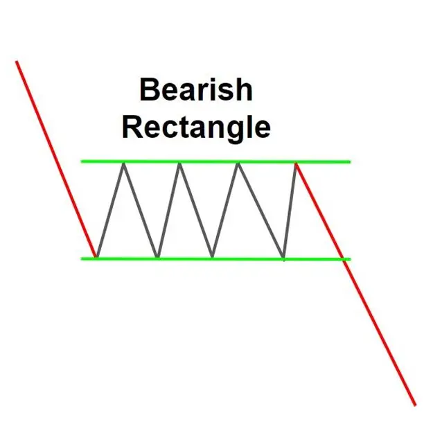
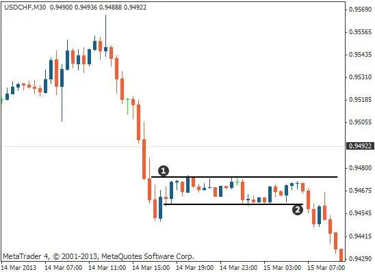

El patrón rectángulo de Bearish es un patrón de gráfico de continuidad de tendencia de una tendencia descendente, formado por una consolidación temporal entre dos movimientos descendentes. Este patrón suele aparecer como un rectángulo, de ahí el nombre.
El patrón de rectángulo de oso señala una fuerte tendencia descendente, y los comerciantes a menudo lo usan como una oportunidad para el comercio. Para introducir el patrón, los comerciantes suelen buscar romper el nivel de soporte inferior del rectángulo.
La altura de un rectángulo es la distancia entre los bordes del mismo. La anchura del rectángulo es la distancia de la duración del tiempo a través de ambos lados del derecho.
El patrón de rectángulo de oso no es un patrón comercial fiable, pero indica una fuerte tendencia de caída y los comerciantes generalmente lo usan como una oportunidad para el comercio.
